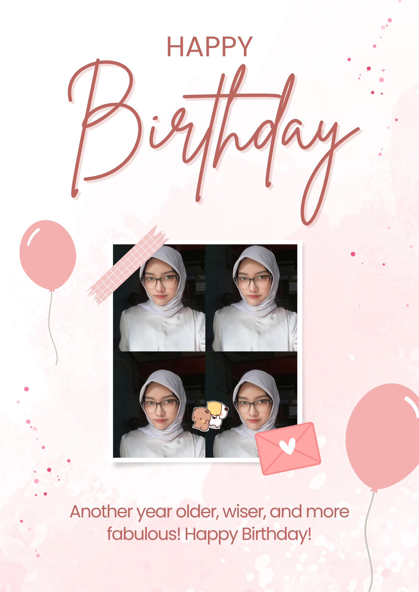

HY SAKIII!!
aku gatau mau kasi kamu apa, jadi aku coba bikinin ini, ini juga di bantu sama raka (chatgpt) hehe...semoga kamu suka<333 maaf aku ambil fotonya dari story km kmren wkwk
aku bingung banget mau ngapain wkwk soalnya biasanya tunggu mood dulu, klo ini lebih ke ngejar deadline, jadi editannya abstrak gitu hahaha, maaf yaa belum bisa kasi apa apa, intinya aku seneng banget kenal sama kamu, kamu orangnya sabar banget walau kadang emang ga sabaran hehe, aku bangga banget lah intinya punya temen kaya kamu, kamu orangnya effort dan excited banget aku sukaaa banget temenan sama kamu HAHAHA jadi keulang ulang gini ya kata katanya? intinya rate temenan sama kamu 9999999++++/10 WKWKWK

karna aku bingung jadi aku sempilin ini hehe, lucuu kann, ini biar flashback dikit wkwk, semoga kita bisa meet yaa, aku pengen banget jalan jalan sama kamu, walau kita orangnya sama sama cepet kehabisan energi HAHAHAHAA kocak banget kan ya? tapi gapapa karna kita orangnya asik, kocak dikit tu ga ngaruh WKWKK
aku suka banget sama editan kamu yang ini. LUCUU BANGETTT HAHAHA. aku gatau kalo sama kamu tu seneng terus wkwk, karna sama kamu apa aja di apresiasi, terharu banget punya temen kaya kamu sakiiii!!! semogaa apa yang kamu doakan selama ini di kabulkan oleh Allah walau itu pelan pelan, yang penting kamu tetep laksanain 5 waktu okeii aku percaya sama kamuu, kamuu cewe hebat yang pernah aku temui seumur hidupku<333
playlis buat orang yang sabarnya limit tapi cantiknya unlimited anjayyyy...semoga suka yaaa, aku di bantu raka cariin beberapa lagu yang cocok sama kepribadian kamu wkwk
terakhir selamat ulang tahun sakiiii, semoga bertambahnya umur mu ini membawa banyak kebaikan,semoga kamu bisa menjadi lebih baik dari tahun sebelumnya, menjadi lebih sabar dalam menghadapi ujian, menjadi makin dewasa saat menghaadapi masalah, kita sama sama belajar dalam menjalani kehidupan, aku harap kamu bisa terus bertahan dalam keadaan apapun, aku tau kamu kuat, aku bangga banget sama kamu, BANGGA BANGETTT BJIRR!!! WKWKWK. apa lagi yaa? aku gatau mau ngomong apa lagi wkwk, maaf ya belum bisa kasi apa apa...aku mau beliin kamu barang tapi aku gatau kamu perlu apa. atau mau aku beliin sesuatu saki? siapatau aku bisa beliin secara online?? intinya kalo mau atau ada apa apa bilang aja yaaa, selama bisa aku lakuin bakal aku lakuin! sekali lagi selamat ulang tahun sakiiiii makasihh udanh mau jadi temenku selama setahun ini, aku gatau lagi mau ngomong apa wkwk soalnya kan kamu tau aku banyak omong kalo ngomel doang wkwk sehatt teruss yaa kamuuu;) oh iya SEMANGATT SKRIPSIANNYAAAAA>< kalo kamu cape kamu ajak aja aku login ml wkwkkw